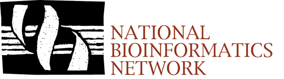

|
Dr Brett G. Olivier www |
Brett started working on PySCeS as part of his PhD and currently leads PySCeS development. He is based in the Systems Bioinformatics group at the VU University Amsterdam investigating the extension of constraint based modelling techniques to ecosystems. Current projects include the development of the SBML Level 3 FBC package for describing constraint based models as well as a new Python based modelling tool PySCeS CBMPy. |
 |
Prof. Johann M. Rohwer |
Johann is an expert in the field of theoretical biochemistry and the real world application of cellular systems modelling. A dedicated Open Source and Python enthusiast Johann makes important contributions to PySCeS. He is a senior member of the Triple-J Group for Molecular Cell Physiology at Stellenbosch University. |
 |
Prof. Jan-Hendrik S. Hofmeyr |
Jannie is a leading scientist in the fields of theoretical biology and systems thinking. Developing the first modelling program (MetaMod) that could be used for metabolic control analysis in 1985, he heads and inspires all aspects of the PySCeS project. He is a Python evangelist and is a senior member of the Triple-J Group for Molecular Cell Physiology at Stellenbosch University. |
| The South African National Bioinformatics Network |  |
|
|||||
|---|---|---|---|---|---|
Site last updated 2013-02-17 |
© 2004-2015 Brett G. Olivier, Amsterdam Site last updated 2015-08-13 |
Maintained by Brett |
|||